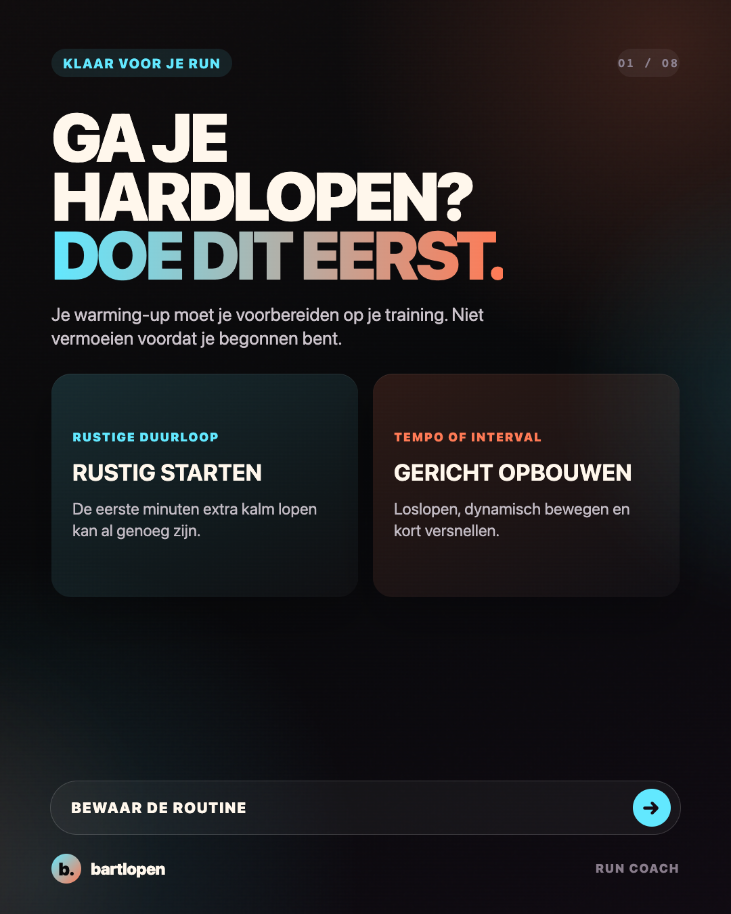
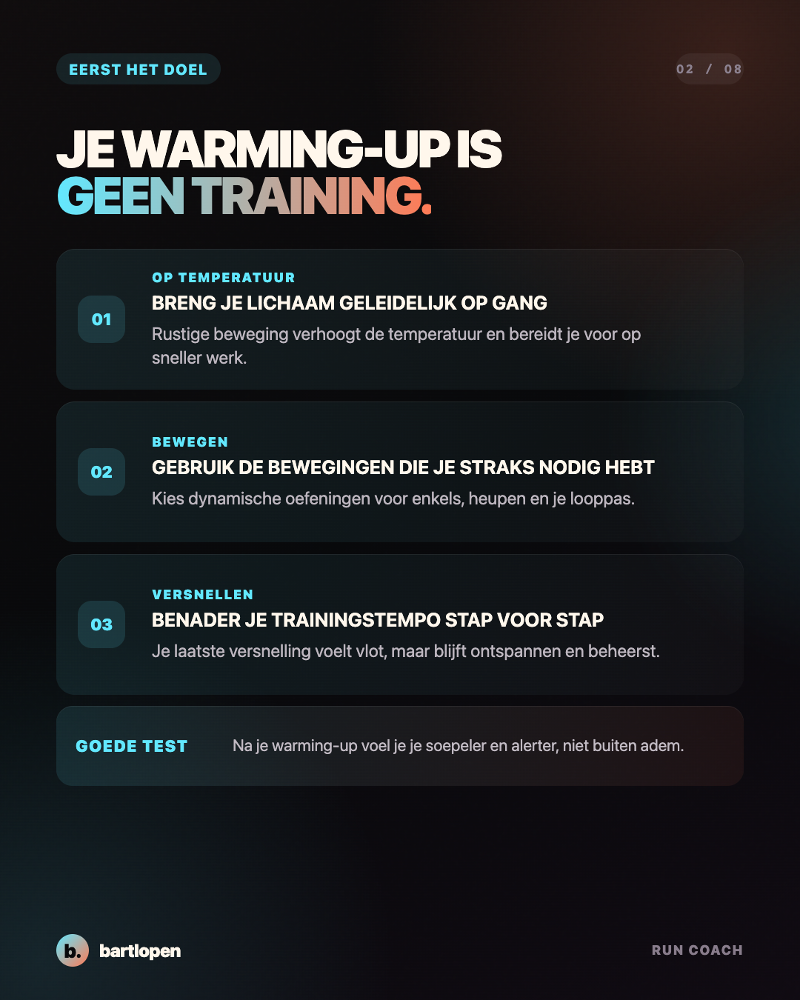
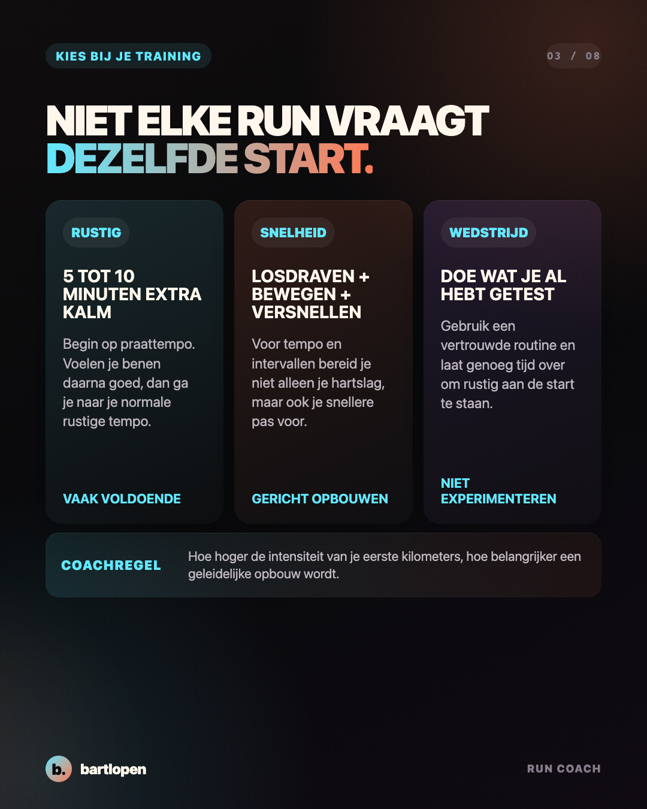
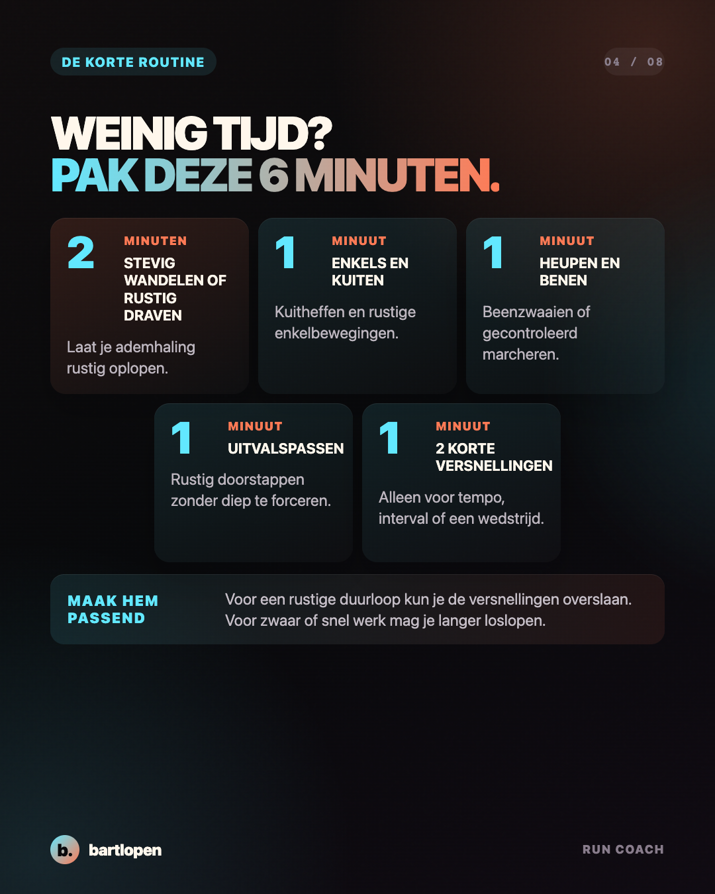
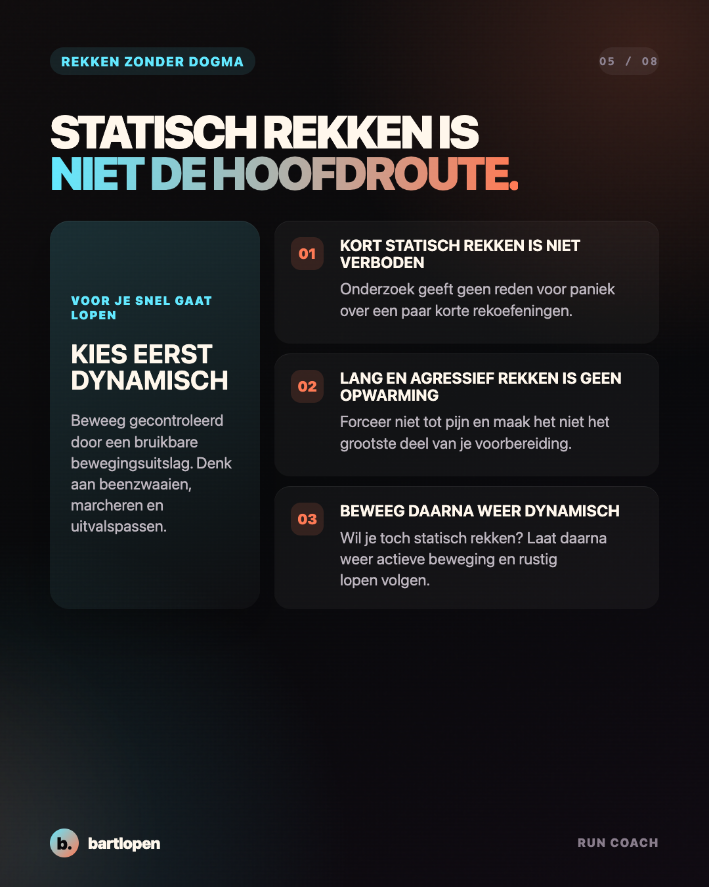
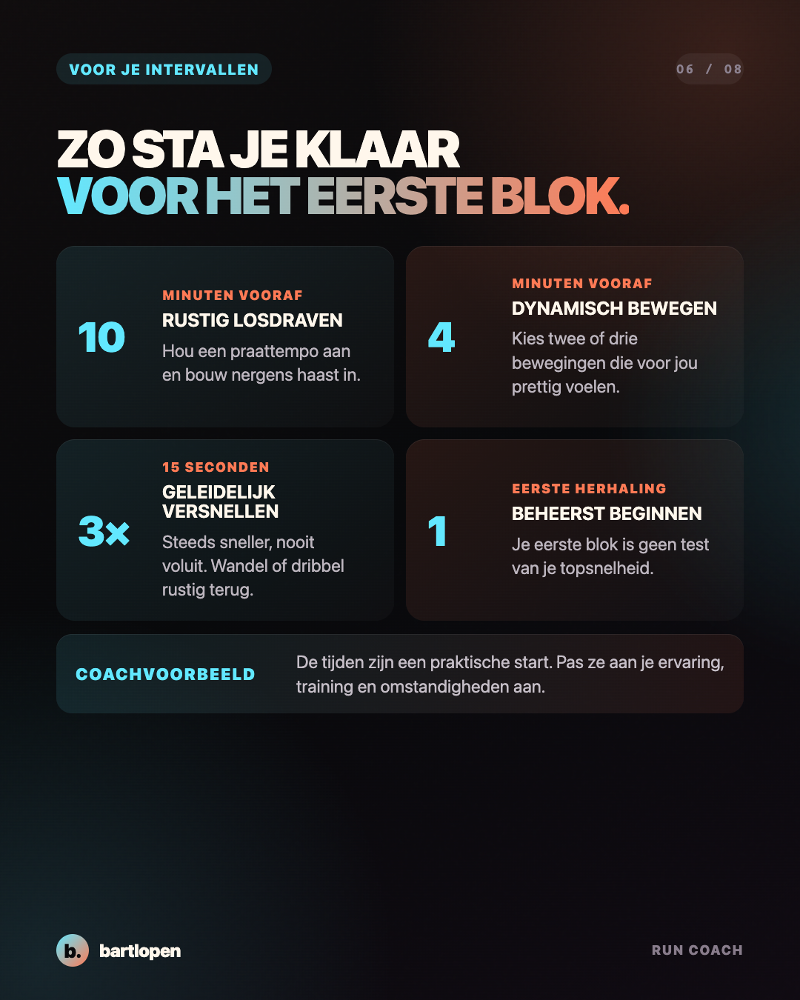
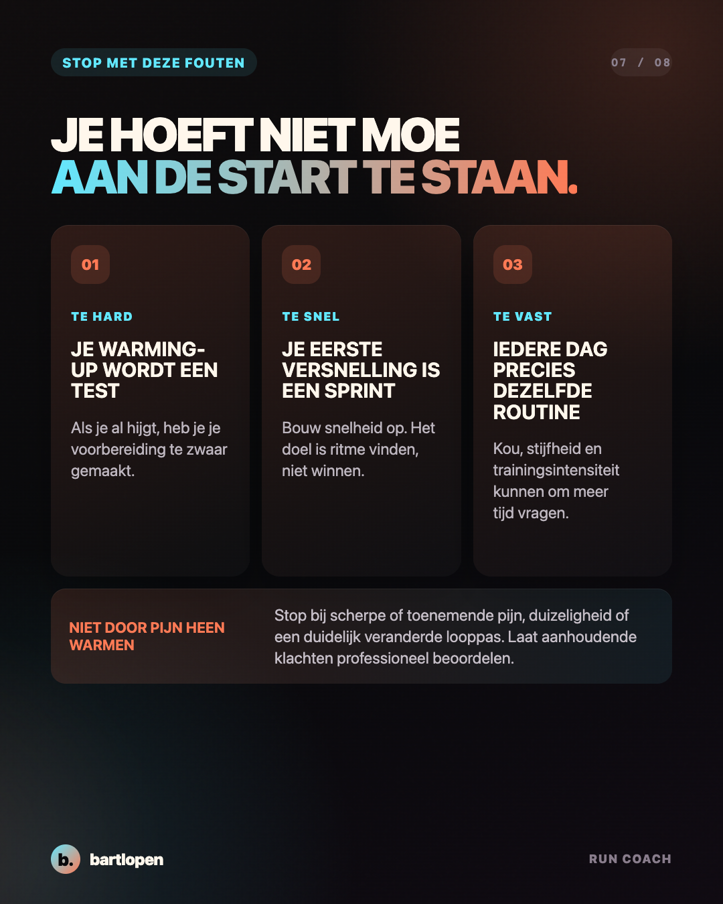
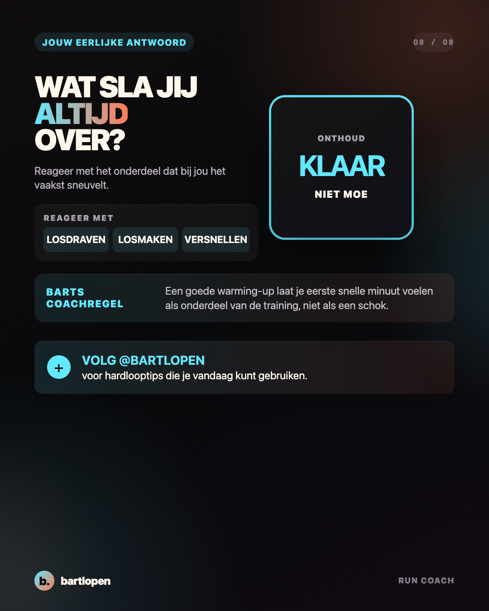

SLIDE 01 ↗Ga je hardlopen?
Doe dit eerst.
Acht praktische slides over een warming-up die past bij een rustige duurloop, intervaltraining of wedstrijd.

SLIDE 02 ↗
SLIDE 03 ↗
SLIDE 04 ↗
SLIDE 05 ↗
SLIDE 06 ↗
SLIDE 07 ↗
SLIDE 08 ↗Caption
GA JE HARDLOPEN? DOE DIT EERST. 👀 Je warming-up hoeft niet lang of ingewikkeld te zijn. Hij moet passen bij wat je daarna gaat doen. Mijn simpele regel: ✅ rustige duurloop? Begin 5 tot 10 minuten extra kalm ✅ tempo of interval? Loslopen, dynamisch bewegen en kort versnellen ✅ wedstrijd? Gebruik alleen een routine die je al hebt getest ✅ klaar? Je voelt je soepeler en alerter, niet moe En nee, statisch rekken is niet ineens verboden. Voor sneller werk is dynamisch bewegen alleen een logischere hoofdroute. Wat sla jij het vaakst over: LOSDRAVEN, LOSMAKEN of VERSNELLEN? 👇 Bewaar deze routine voor je volgende training. #hardlopen #hardlooptips #warmingup #intervaltraining #runningtips #5kmtraining #10kmtraining #runcoach #bartlopen
Onderbouwing: een systematische review uit 2025 over spieropwarming en prestatie, een systematische review uit 2025 over rekken en loopeconomie, een systematische review over rekken binnen een warming-up, een kleine studie bij recreatieve afstandslopers en de praktische warming-upbron van World Athletics. De tijden en oefeningen zijn coachvoorbeelden en geen persoonlijk medisch advies.